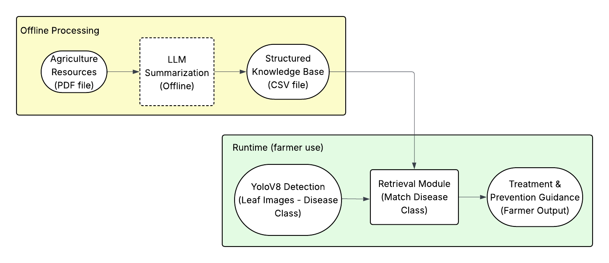
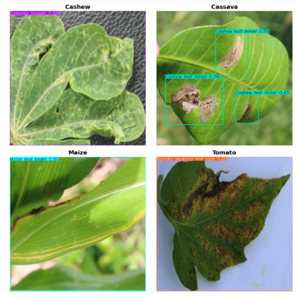
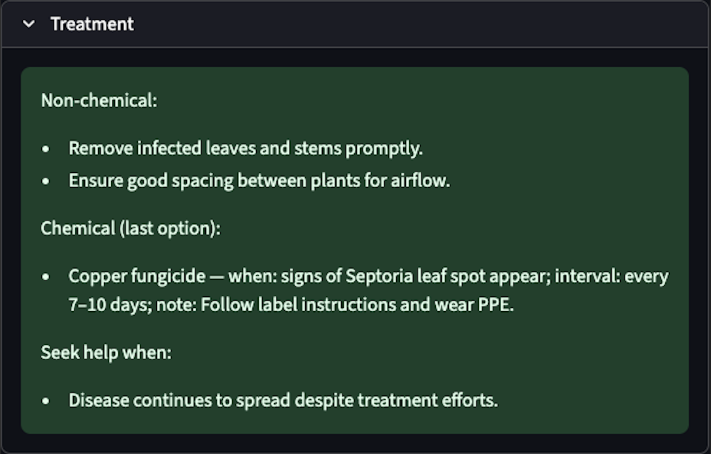

Featured AI Project
Open-source YOLOv8 + LangChain RAG app that helps smallholder farmers detect plant diseases and get safe, farmer-friendly treatment advice.
This project uses AI to bring fast, offline-friendly diagnosis and evidence-based advice directly to farmers in low-connectivity regions.
End-to-end ownership from data and modeling to deployment:

The architecture has two stages. In the offline stage, agricultural PDF manuals are summarized by an LLM and converted into a structured CSV knowledge base (crop, disease, symptoms, treatment, prevention). In the runtime stage, a farmer uploads a leaf photo; YOLOv8 detects the crop and disease class, a retrieval module matches that class in the knowledge base, and the LLM returns farmer-friendly treatment and prevention guidance.

Example detection results from YOLOv8 on the crop dataset. The model localizes diseased regions on cashew, cassava, maize, and tomato leaves, draws bounding boxes, and assigns a predicted disease class with confidence scores. These predicted classes become the key used by the retrieval module to look up matching records in the structured knowledge base.
Images Credit: Crop Pest and Disease Detection Dataset (CCMT)

Example of the text output generated for a tomato leaf diagnosed as Septoria Leaf Spot. Given the detected disease class, the system retrieves the relevant entry from the knowledge base and uses an LLM to format it into clear guidance: non-chemical and chemical treatment steps, early warning signs, and when to seek expert help. The language is simplified and organized into bullet points so that farmers can quickly act on the advice.